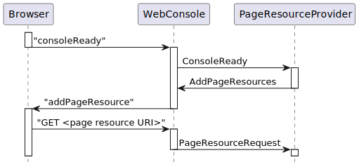

Class AddPageResources
- java.lang.Object
-
- org.jgrapes.core.internal.EventBase<T>
-
- org.jgrapes.core.Event<Void>
-
- org.jgrapes.webconsole.base.events.ConsoleCommand
-
- org.jgrapes.webconsole.base.events.AddPageResources
-
- All Implemented Interfaces:
Future<Void>,Associator,Eligible
public class AddPageResources extends ConsoleCommand
Adds <link …/>,<style>...</style>or<script ...></script>nodes to the web console’s<head>node on behalf of components that provide such resources.Adding resource references causes the browser to issue
GETrequest that (usually) refer to resources that are then provided by the component that created theAddPageResourcesevent.The sequence of events is shown in the diagram.

See
ResourceRequestfor details about the processing of thePageResourceRequest.The
GETrequest may also, of course, refer to a resource from another server and thus not result in aPageResourceRequest.Adding a
<script src=...></script>node to a document’s<head>causes the referenced JavaScript to be loaded asynchronously. This can cause problems if a dynamically added library relies on another library to be available. Script resources are therefore specified using theAddPageResources.ScriptResourceclass, which allows to specify loading dependencies between resources. The code in the browser delays the addition of a<script>node until all other script resources that it depends on are loaded.Some libraries provided as page resources may already be required by the JavaScript web console code (especially by the resource manager that handles the delayed loading). They can therefore not be loaded by this mechanism, which depends on the web console code. Such page resources may be “pre-loaded” by adding the appropriate
scriptelement to the initial web console page. In order to make the pre-loading known to the resource manager, thescriptelements must carry an attributedata-jgwc-provideswith a comma separated list of JavaScript resource names provided by loading the script resource. The name(s) must match the name(s) used in theAddPageResourcesrequest generated by thePageResourceProviderfor the pre-loaded resource(s). Here’s an example (for a web console using theFreeMarkerConsoleWebletto generate the initial web console page):<script data-jgwc-provides="jquery" src="${renderSupport.pageResource('jquery/jquery' + minifiedExtension + '.js')}"> </script>;
-
-
Nested Class Summary
Nested Classes Modifier and Type Class Description static classAddPageResources.ScriptResourceRepresents a script resource that is to be loaded or evaluated by the browser.
-
Field Summary
-
Fields inherited from class org.jgrapes.core.internal.EventBase
completed, completionEvents
-
-
Constructor Summary
Constructors Constructor Description AddPageResources()
-
Method Summary
All Methods Instance Methods Concrete Methods Modifier and Type Method Description AddPageResourcesaddCss(URI uri)Add the URI of a CSS resource that is to be added to the header section of the web console page.AddPageResourcesaddScriptResource(AddPageResources.ScriptResource scriptResource)Add the URI of a JavaScript resource that is to be added to the header section of the web console page.StringcssSource()URI[]cssUris()Return all CSS URIs.AddPageResources.ScriptResource[]scriptResources()Return all script URIsAddPageResourcessetCssSource(String cssSource)voidtoJson(Writer writer)Writes the event as JSON notification to the given writer.-
Methods inherited from class org.jgrapes.webconsole.base.events.ConsoleCommand
toJson
-
Methods inherited from class org.jgrapes.core.Event
addCompletionEvent, associated, cancel, channels, channels, completionEvents, currentResults, defaultCriterion, forChannels, get, get, handled, handlingError, isCancelled, isDone, isEligibleFor, isStopped, processedBy, results, results, setAssociated, setChannels, setRequiresResult, setResult, stop, tieTo, toString
-
Methods inherited from class org.jgrapes.core.internal.EventBase
disableTracking, enqueued, firstResultAssigned, isTracked
-
Methods inherited from class java.lang.Object
clone, equals, finalize, getClass, hashCode, notify, notifyAll, wait, wait, wait
-
Methods inherited from interface org.jgrapes.core.Associator
associated, associated, associated
-
-
-
-
Constructor Detail
-
AddPageResources
public AddPageResources()
-
-
Method Detail
-
addScriptResource
public AddPageResources addScriptResource(AddPageResources.ScriptResource scriptResource)
Add the URI of a JavaScript resource that is to be added to the header section of the web console page.- Parameters:
scriptResource- the resource to add- Returns:
- the event for easy chaining
-
scriptResources
public AddPageResources.ScriptResource[] scriptResources()
Return all script URIs- Returns:
- the result
-
addCss
public AddPageResources addCss(URI uri)
Add the URI of a CSS resource that is to be added to the header section of the web console page.- Parameters:
uri- the URI- Returns:
- the event for easy chaining
-
setCssSource
public AddPageResources setCssSource(String cssSource)
- Parameters:
cssSource- the cssSource to set
-
toJson
public void toJson(Writer writer) throws IOException
Description copied from class:ConsoleCommandWrites the event as JSON notification to the given writer.Derived classes usually simply call
ConsoleCommand.toJson(Writer, String, Object...)with the method name and parameters.- Specified by:
toJsonin classConsoleCommand- Parameters:
writer- the writer- Throws:
IOException
-
-